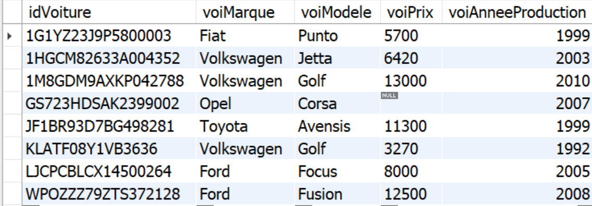
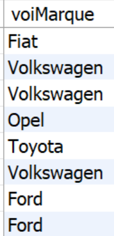
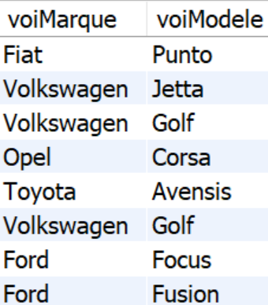
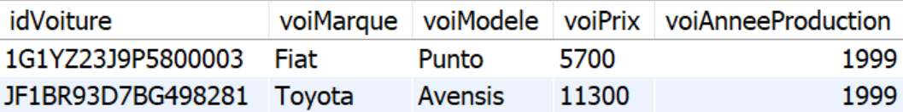
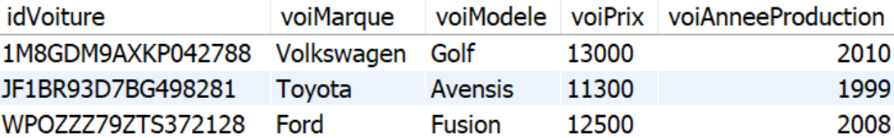
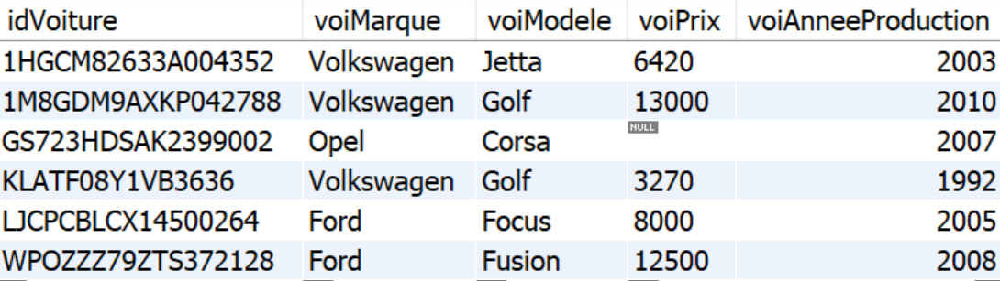
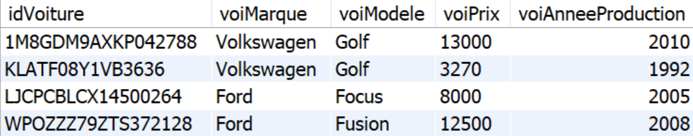
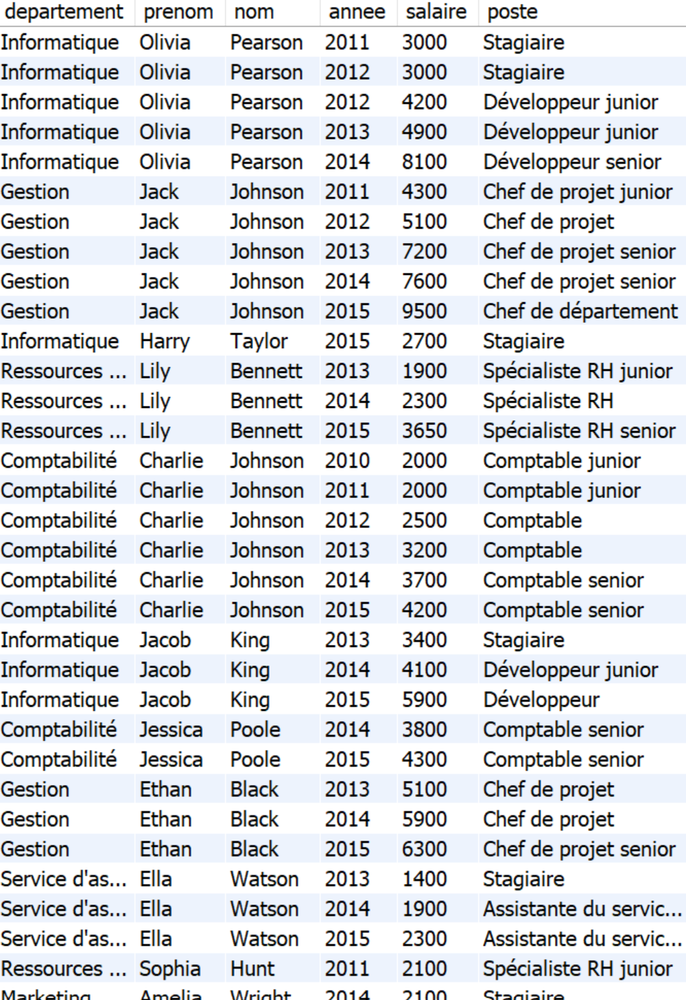
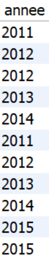
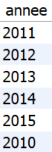

Module 106 - Interroger, traiter et assurer la maintenance des bases de données
Grégory Charmier
Module 106
Contexte dans le plan de formation
- Module 162 - Analyser et modéliser des données
- Module 164 - Créer des bases de données et y insérer des données
- Module 106 - Interroger, traiter et assurer la maintenance des bases de données
Identification du module
Tests - Module 106
- 1er test - 50% - 3 périodes (à valider)
- 2ème test - 50% - 3 périodes (à valider)
Introduction
MySQL
- Base de données relationnelle
- Licence libre (GPL) ou licence propriétaire (Oracle)
- Multiplateforme : Windows, Mac ou Linux
MySQL est un SGBDR
SGBDR : Système de Gestion de Base de Données Relationnelles
SGBDR = RDBMS
RDBMS en anglais pour Relational Database Management System
MySQL est un SGBDR
Connaissez vous d’autres SGBDR ?
MySQL est un SGBDR
Par exemple : PostgreSQL, Oracle, Microsoft SQL Server, MariaDB, etc
MySQL est un SGBDR
MySQL, ce n’est pas uniquement une base de données !
MySQL est un SGBDR
MySQL permet de gérer les bases de données !
MySQL est un SGBDR
MySQL permet de
- gérer les interrogations via les requêtes SQL
- gérer la sécurité à travers la définition de permissions
- gérer la cohérence à travers l’établissement de contraintes
- stockage d’informations dans des tables en suivant un modèle spécifique : Le modèle relationnel
MySQL est un SGBDR
- MySQL est un serveur !
- Il nous faut un programme client : Workbench, PHPMyAdmin, etc
Modèle relationnel
- Créé par Edgar Codd
- Théorie mathématique des ensembles
- Algèbre relationnelle
- Traitement logique et abstraite des données
Histoire de MySQL
- Crée en 1994 en Suède par Michael Widenius (et David Axmark et Allan Larsson)
- Sa 1ère fille s’appelle My
- Libre, open source et gratuit
- MySQL AB acheté le 16 janvier 2008 par Sun Microsystems puis par Oracle en 2009
Histoire de MySQL
- En 2009, Michael Widenius a créé MariaDB (sa 2ème fille s’appelle Maria) pour continuer son développement Open Source
- MariaDB est un fork de MySQL !
- Dernière version de MySQL : 8
SQL
Structured Query Language
SQL
Toutes les bases de données relationnelles fonctionnent avec le SQL, mais chacune d’entre elles utilise un dialecte légèrement différent
SQL
- Dans ce cours, vous apprendrez les bases du SQL standard qui est compris par toutes les bases de données relationnelles
- Grâce au SQL, vous serez en mesure d’effectuer des requêtes dans chaque environnement de base de données
Les 4 sous langages SQL
- DDL
- DCL
- DML
- TCL
DDL - Data Definition Language
- Créer, modifier ou supprimer des éléments de structure de donnée
- ALTER, DROP, CREATE, etc
DCL - Data control language
- Gère les droits sur les bases de données
- GRANT, REVOKE, etc
DML - Data Manipulation Language
- Sert à interagir avec les données
- SELECT, UPDATE, INSERT, DELETE, etc
TCL - Transaction control language
- Sert à contrôler les transactions
- COMMIT, ROLLEBACK, etc
Les requêtes SQL - La sélection
Table VOITURE

Voir le fichier db_voitures.sql présent dans votre canal Teams !
SELECT - Obtenir toutes les données
Sélectionner toutes les données !
SELECT - Obtenir toutes les données
SELECT - Sélectionnez une colonne
Sélectionnez uniquement les marques des voitures.
SELECT - Sélectionnez une colonne

SELECT - Sélectionnez plusieurs colonnes
Sélectionnez uniquement les marques et les modèles des voitures
SELECT - Sélectionnez plusieurs colonnes

SELECT - Sélectionnez seulement quelques lignes
Sélectionnez toutes les colonnes pour les voitures qui ont été produites en 1999
SELECT - Sélectionnez seulement quelques lignes

SELECT - Opérateurs conditionnels
Outre le signe d’égalité =, il existe d’autres opérateurs conditionnels que vous pouvez utiliser :
- < inférieur à
- > supérieur à
- <= inférieur ou égal
- >= supérieur ou égal
SELECT - Opérateurs conditionnels
Sélectionnez toutes les colonnes pour toutes les voitures dont le prix est supérieur à 10 000 $
SELECT - Opérateurs conditionnels

SELECT - Le signe d’inégalité !=
Sélectionnez toutes les colonnes pour les voitures qui n’ont pas été produites en 1999
SELECT - Le signe d’inégalité !=

Opérateurs conditionnels et sélection de colonnes
Sélectionnez la marque, le modèle et l’année de production de toutes les voitures dont le prix est inférieur ou égal à 11 300 $
Opérateurs conditionnels et sélection de colonnes

Opérateurs logiques - OR
Sélectionnez les identifiants de toutes les voitures qui ont été produites avant 2005 ou dont le prix est inférieur à 10 000 $
Opérateurs logiques - OR

Opérateurs logiques - AND
Sélectionnez les identifiants de toutes les voitures qui ont été produites après 1999 et dont le prix est inférieur à 7 000 $
Opérateurs logiques - AND

L’opérateur BETWEEN
Sélectionnez les identifiants, marques, et modeles de toutes les voitures produites entre 1995 et 2005
L’opérateur BETWEEN

L’opérateur BETWEEN
- Avec MySQL, les deux valeurs des bornes sont incluses.
- Ce n’est pas le cas pour d’autres SGBD
- Vérifiez toujours comment BETWEEN fonctionne dans votre base de données.
Opérateurs logiques - NOT
Sélectionnez les identifiants, marques, et modeles de toutes les voitures sauf celles produites entre 1995 et 2005
Opérateurs logiques - NOT
SELECT idVoiture, voiMarque, voiModele
FROM voiture
WHERE voiAnneeProduction
NOT BETWEEN 1995 AND 2005;
Ajouter encore plus de conditions
Sélectionnez les identifiants de toutes les voitures qui :
- ont été produites avant 1999 ou après 2005
- et dont le prix est inférieur à 4 000$ ou supérieur à 10 000$
Ajouter encore plus de conditions
SELECT idVoiture
FROM voiture
WHERE (voiAnneeProduction < 1999
OR voiAnneeProduction > 2005)
AND (voiPrix < 4000 OR voiPrix > 10000);
Noter l’utilisation des parenthèses !
Utiliser du texte
Notez que lorsque nous travaillons avec des valeurs textuelles (ou des dates), nous utilisons des guillemets simples (’) autour de la valeur.
Utiliser du texte
Sélectionnez toutes les colonnes de toutes les voitures Ford présentes dans la table
Utiliser du texte

Opérateur LIKE
- L’opérateur LIKE nous permet d’utiliser % et _ pour créer des motifs correspondant à plusieurs valeurs
- % pour correspondre à n’importe quel nombre de caractères (0 inclus)
- _ pour remplacer un seul caractère
Le signe de pourcentage (%)
Sélectionnez les identifiants, marques, et modeles de toutes les voitures dont la marque commence par un F
Le signe de pourcentage (%)

Le signe de pourcentage (%) suite
Sélectionnez l’identifiant de toutes les voitures dont le modèle se termine par un s
Le signe de pourcentage (%) suite
%20suite.png)
Le signe de soulignement (_)
Le signe de soulignement (_) correspond à un seul caractère
Exemple : Sélectionnez toutes les colonnes pour les voitures dont la marque correspond à ‘Volk_wagen’
Le signe de soulignement (_)

Aller plus loin avec LIKE
- Dans MySQL, le comportement du mot-clé LIKE est déterminé par la collation de la colonne sur laquelle il est utilisé
- Par défaut, la collation dans MySQL est souvent insensible à la casse (par exemple, utf8mb4_general_ci ou latin1_swedish_ci)
- ce qui signifie que la comparaison effectuée avec LIKE sera également insensible à la casse.
LIKE et la casse ?
Sélectionnez toutes les colonnes pour les voitures dont le modele contient un f minuscule
LIKE et la casse ?
A votre avis (c’est à dire sans faire la requête), quel est le résultat de la requête suivante :
LIKE et la casse ?

Aller plus loin avec LIKE
- Dans MySQL, le comportement du mot-clé LIKE est déterminé par la collation de la colonne sur laquelle il est utilisé
- Par défaut, la collation dans MySQL est souvent insensible à la casse (par exemple, utf8mb4_general_ci ou latin1_swedish_ci)
- ce qui signifie que la comparaison effectuée avec LIKE sera également insensible à la casse.
- L’opérateur ILIKE n’existe pas avec MySQL
Aller plus loin avec LIKE
Sélectionnez toutes les colonnes pour les voitures dont le modele contient un f minuscule
Recherche de valeurs NOT NULL
Sélectionnez toutes les colonnes pour chaque voiture dont la colonne prix n’a pas de valeur NULL
Recherche de valeurs NOT NULL

Recherche de valeurs NULL
Sélectionnez toutes les colonnes pour chaque voiture dont le prix est inconnu (NULL)
Recherche de valeurs NULL

Comparaisons avec NULL
Sélectionnez toutes les colonnes des voitures dont la colonne prix est supérieure ou égale à zéro
Comparaisons avec NULL

Notez que l’Opel dont le prix est inconnu ne figure pas dans le résultat
Opérateurs mathématiques de base
- Sélectionnez toutes les colonnes pour les voitures dont le montant de la taxe est supérieur à 2 000 $
- Le montant de la taxe pour toutes les voitures s’élève à 20 % de leur prix
- Multipliez prix par 0,2 pour obtenir le montant de la taxe
Opérateurs mathématiques de base

Exercice :
Sélectionnez toutes les colonnes des voitures qui :
- ont été produites entre 1999 et 2005,
- ne sont pas des Volkswagen,
- ont un modèle qui commence par ‘P’ ou ‘F’,
- ont leur prix fixé
Solution de l’exercice :
SELECT *
FROM voiture
WHERE voiAnneeProduction BETWEEN 1999 AND 2005
AND voiMarque != 'Volkswagen'
AND (voiModele LIKE 'P%' OR voiModele LIKE 'F%')
AND voiPrix IS NOT NULL;
SOURCE
Agrégation et regroupement
Table employés

Table employés
Cette table ne respecte pas volontairement :
- les conventions de l’ETML
- les 3 formes normales (pas d’id)
Trier les lignes - ORDER BY
Sélectionnez toutes les colonnes de la table employe et triez-les en fonction du salaire
Trier les lignes - ORDER BY
ORDER BY avec conditions
- Sélectionnez uniquement les lignes relatives à l’année 2011 dans la table employe
- Triez-les par salaire
ORDER BY avec conditions
Ordre ascendant et descendant
- Sélectionnez toutes les lignes de la table employe
- Triez-les dans l’ordre décroissant de la colonne nom
Ordre ascendant et descendant
Trier par quelques colonnes
- Sélectionnez toutes les lignes de la table employe
- Triez-les dans l’ordre croissant par le département
- Puis dans l’ordre décroissant par le salaire
Trier par quelques colonnes
Trier et limiter
- Sélectionnez les employées qui sont dans le top 3 des meilleurs salaires
- Et triez-les dans l’ordre décroissant par le salaire
Trier et limiter
Remarque : Le mot clé LIMIT peut bien sûr s’utiliser seul.
Résultats en double
- Sélectionnez la colonne annee pour toutes les lignes de la table employe
- Puis examinez attentivement le résultat
Résultats en double

Sélectionner des valeurs distinctes
Sélectionnez la colonne annee dans la table employe de manière à ce que chaque année n’apparaisse qu’une seule fois
Sélectionner des valeurs distinctes

Sélectionner des valeurs distinctes dans certaines colonnes
- Vérifiez quels postes il y a dans chaque département
- Pour ce faire, sélectionnez les colonnes departement et poste de la table employe et éliminez les doublons !
Sélectionner des valeurs distinctes dans certaines colonnes
Compter les lignes
Compter toutes les lignes de la table employe
Compter les lignes
Compter les lignes, ignorer les NULLs
- Vérifiez le nombre de valeurs non NULL dans la colonne poste dans la table employe
- Nommez la colonne nb_non_nulle
Compter les lignes, ignorer les NULLs
Compter les valeurs distinctes dans une colonne
- Comptez combien de positions différentes il y a dans la table employe
- Nommez la colonne positions_distinctes
Compter les valeurs distinctes dans une colonne
les fonctions d’agrégation
SUM() - pour additionner les valeurs de chaque cellule de la colonne AVG() - pour calculer la valeur moyenne de la colonne MIN() - pour obtenir la plus petite valeur de la colonne MAX() - pour obtenir la plus grande valeur de la colonne
Trouvez la valeur minimale et maximale
Sélectionnez le salaire le plus élevé dans la table employe
Trouvez la valeur minimale et maximale
Trouver la valeur moyenne
Trouvez le salaire moyen dans la table employe pour l’année 2013
Trouver la valeur moyenne
Trouver la somme
- Trouvez la somme de tous les salaires du département Marketing en 2014
- N’oubliez pas de mettre le nom du département entre apostrophes !
Trouver la somme
Regrouper les lignes et les compter
- Trouvez le nombre d’employés dans chaque service au cours de l’année 2013
- Indiquez le nom du service et le nombre d’employés
- Nommez la deuxième colonne nb_employe
Regrouper les lignes et les compter
Trouver les valeurs minimales et maximales dans des groupes
Affichez tous les départements ensemble avec leur salaire le plus bas et le plus élevé en 2014
Trouver les valeurs minimales et maximales dans des groupes
Trouver la valeur moyenne dans les groupes
Pour chaque département, trouvez le salaire moyen en 2015
Trouver la valeur moyenne dans les groupes
Regroupement par quelques colonnes
- Trouvez le salaire moyen de chaque employé
- Affichez le nom de famille, le prénom et le salaire moyen
- Regroupez les résultats par le nom de famille et le prénom
Regroupement par quelques colonnes
Filtrer des groupes
- Trouvez les employés ayant passé plus de deux ans dans l’entreprise
- Sélectionnez leur nom et leur prénom ainsi que le nombre d’années travaillées (nommez cette colonne annees)
Filtrer des groupes
SELECT nom, prenom, COUNT(DISTINCT annee) AS annees
FROM employe
GROUP BY nom, prenom
HAVING COUNT(DISTINCT annee) > 2;Notez que nous utilisons DISTINCT parce qu’un emploi peut changer au cours de l’année exemple :
- Informatique Olivia Pearson 2012 3000 Stagiaire
- Informatique Olivia Pearson 2012 4200 Développeur junior Olivia a changé de poste dans l’année 2012 donc sans le DISTINCIT 2 fois l’annee 2012
Filtrer des groupes - suite
Trouvez les départements où le salaire moyen en 2012 était supérieur à 3 000 $. Affichez le nom du département avec le salaire moyen
Ordonner des groupes
Triez les employés en fonction de leurs salaires totaux. Les valeurs les plus élevées doivent apparaître en premier. Affichez le nom de famille, le prénom et la somme
Ordonner des groupes
Mettez vos compétences en pratique
- Affichez les colonnes nom et prenom de la table employe avec le salaire moyen de chaque personne et le nombre d’années pendant lesquelles elle a travaillé dans l’entreprise
- Utilisez les alias suivants :
- salaire_moyen pour le salaire moyen de chaque personne
- annees_travaillees pour le nombre d’années travaillées dans l’entreprise
- Ne faites s’afficher que les employés qui ont travaillé plus de deux ans dans l’entreprise
- Classez les résultats en fonction du salaire moyen dans l’ordre décroissant